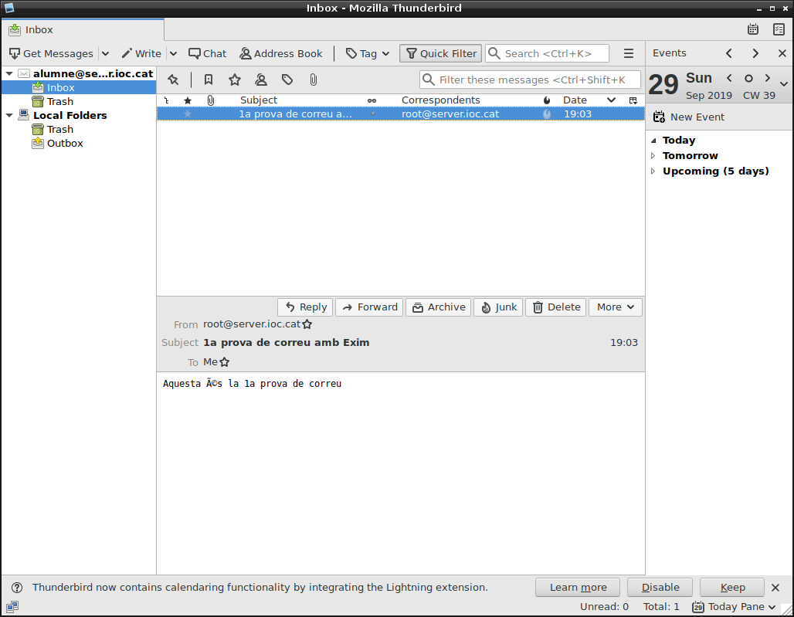

1. Instal·lació del servidor Exim.
Per tal d’instal·lar el programari, haurem d’accedir al terminal. Comprovem primer com s’anomena el paquet a instal·lar:
# apt-cache search exim | grep exim
exim4 - metapackage to ease Exim MTA (v4) installation
exim4-base - support files for all Exim MTA (v4) packages
exim4-config - configuration for the Exim MTA (v4)
exim4-daemon-heavy - Exim MTA (v4) daemon with extended features, including exiscan-acl
exim4-daemon-heavy-dbg - debugging symbols for the Exim MTA "heavy" daemon
exim4-daemon-light - lightweight Exim MTA (v4) daemon
exim4-daemon-light-dbg - debugging symbols for the Exim MTA "light" daemon
exim4-dbg - debugging symbols for the Exim MTA (utilities)
exim4-dev - header files for the Exim MTA (v4) packages
eximon4 - monitor application for the Exim MTA (v4) (X11 interface)
exim4-doc-html - documentation for the Exim MTA (v4) in html format
exim4-doc-info - documentation for the Exim MTA (v4) in info format
geximon - a monitor for the exim MTA
rexima - simple ncurses/command-line mixer
sa-exim - SpamAssassin filter for Exim
Veiem que hi ha dues versions de MTA del programari Exim, una de lleugera (light) i una altra de pesada (heavy). També existeix un metapaquet que facilita la instal·lació de la lleugera.
Si mirem els detalls del paquet exim4-daemon-heavy a l’apartat description-en veurem quines característiques porta de més:
# apt-cache show exim4-daemon-heavy
Package: exim4-daemon-heavy
Source: exim4
Version: 4.92-8+deb10u3~bpo9+1
Installed-Size: 1525
Maintainer: Exim4 Maintainers <pkg-exim4-maintainers@lists.alioth.debian.org>
Architecture: i386
Replaces: exim4-base (<= 4.61-1), mail-transport-agent
Provides: exim4-localscanapi-2.0, mail-transport-agent
Depends: exim4-base (>= 4.92), debconf (>= 0.5) | debconf-2.0, libc6 (>= 2.16), libdb5.3, libgnutls-dane0 (>= 3.5.7), libgnutls30 (>= 3.5.7), libldap-2.4-2 (>= 2.4.7), libmariadbclient18 (>= 10.1.41-0+deb9u1), libpam0g (>= 0.99.7.1), libpcre3, libperl5.24 (>= 5.24.0), libpq5, libsasl2-2, libsqlite3-0 (>= 3.5.9)
Conflicts: mail-transport-agent
Breaks: clamav-daemon (<< 0.95)
Description-en: Exim MTA (v4) daemon with extended features, including exiscan-acl
Exim (v4) is a mail transport agent. This package contains the exim4
daemon with extended features. In addition to the features already
supported by exim4-daemon-light, exim4-daemon-heavy includes LDAP,
sqlite, PostgreSQL and MySQL data lookups, SASL and SPA SMTP authentication,
embedded Perl interpreter, and the content scanning extension
(formerly known as "exiscan-acl") for integration of virus scanners
and spamassassin.
Instal·lem per al nostres propòsits la versió lleugera:
# apt-get install exim4
S'està llegint la llista de paquets… Fet
S'està construint l'arbre de dependències
S'està llegint la informació de l'estat… Fet
S'instal·laran els següents paquets extres:
exim4-base exim4-config exim4-daemon-light guile-2.0-libs libgc1c2 libgsasl7 libkyotocabinet16v5
libmailutils5 libmariadbclient18 libntlm0 mailutils mailutils-common mysql-common
Paquets suggerits:
eximon4 exim4-doc-html | exim4-doc-info spf-tools-perl swaks mailutils-mh mailutils-doc
S'instal·laran els paquets NOUS següents:
exim4 exim4-base exim4-config exim4-daemon-light guile-2.0-libs libgc1c2 libgsasl7 libkyotocabinet16v5
libmailutils5 libmariadbclient18 libntlm0 mailutils mailutils-common mysql-common
0 actualitzats, 14 nous a instal·lar, 0 a suprimir i 322 no actualitzats.
S'ha d'obtenir 7919 kB d'arxius.
Després d'aquesta operació s'empraran 26,3 MB d'espai en disc addicional.
Voleu continuar? [S/n]
2. Configuració del servidor Exim.
Quan s’instal·la el servidor Exim, aquest ho fa amb una configuració per defecte. Per canviar-la i adequar-la a les nostres necessitats cal executar:
dpkg-reconfigure exim4-config
Afegim la nostra IP:
Les següents opcions per defecte, fins que ens demana el format de la bústia.
Els principals formats de bústia que suporta Exim són:
Seleccionem el format Maildir:
La configuració un cop realitzada queda desada al fitxer /etc/exim4/update-exim4.conf.conf
Si donem un cop d’ull a aquest fitxer veurem la configuració realitzada i a la capçalera ens indica les formes en que es pot configurar Exim, és a dir, editant directament aquest fitxer per posteriorment actualitzar la configuració o simplement executant la comanda dpkg-reconfigure exim4-config.
# /etc/exim4/update-exim4.conf.conf
#
# Edit this file and /etc/mailname by hand and execute update-exim4.conf
# yourself or use 'dpkg-reconfigure exim4-config'
#
# Please note that this is _not_ a dpkg-conffile and that automatic changes
# to this file might happen. The code handling this will honor your local
# changes, so this is usually fine, but will break local schemes that mess
# around with multiple versions of the file.
#
# update-exim4.conf uses this file to determine variable values to generate
# exim configuration macros for the configuration file.
#
# Most settings found in here do have corresponding questions in the
# Debconf configuration, but not all of them.
#
# This is a Debian specific file
dc_eximconfig_configtype='internet'
dc_other_hostnames='server.ioc.cat'
dc_local_interfaces='127.0.0.1; 10.0.2.15'
dc_readhost=''
dc_relay_domains=''
dc_minimaldns='false'
dc_relay_nets=''
dc_smarthost=''
CFILEMODE='644'
dc_use_split_config='false'
dc_hide_mailname=''
dc_mailname_in_oh='true'
dc_localdelivery='maildir_home'
root@server:/etc/exim4#
Reiniciem el servei i comprovem que s’està executant correctament.
# service exim4 restart
# service exim4 status
● exim4.service - LSB: exim Mail Transport Agent
Loaded: loaded (/etc/init.d/exim4; generated; vendor preset: enabled)
Active: active (running) since Sun 2019-09-29 18:47:12 CEST; 4s ago
Docs: man:systemd-sysv-generator(8)
Process: 14719 ExecStop=/etc/init.d/exim4 stop (code=exited, status=0/SUCCESS)
Process: 14730 ExecStart=/etc/init.d/exim4 start (code=exited, status=0/SUCCESS)
Tasks: 1 (limit: 4915)
CGroup: /system.slice/exim4.service
└─14979 /usr/sbin/exim4 -bd -q30m
set 29 18:47:12 server.ioc.cat systemd[1]: Stopped LSB: exim Mail Transport Agent.
set 29 18:47:12 server.ioc.cat systemd[1]: Starting LSB: exim Mail Transport Agent...
set 29 18:47:12 server.ioc.cat exim4[14730]: Starting MTA: exim4.
set 29 18:47:12 server.ioc.cat systemd[1]: Started LSB: exim Mail Transport Agent.
La comanda exim permet fer una varietat d’operacions, des de llegir la cua del correu a executar el servei en diverses modalitats. L’opció -bV, apart de donar-nos informació de versions, dates, etc. també realitza una verificació estàtica dels fitxers de configuració, útil per detectar possibles errors.
# man exim
...
-bV This option causes Exim to write the current version number, compilation number, and com
pilation date of the exim4 binary to the standard output. It also lists the DBM library
that is being used, the optional modules (such as specific lookup types), the drivers that
are included in the binary, and the name of the run time configuration file that is in
use.
As part of its operation, -bV causes Exim to read and syntax check its configuration file.
However, this is a static check only. It cannot check values that are to be expanded. For
example, although a misspelt ACL verb is detected, an error in the verb's arguments is
not. You cannot rely on -bV alone to discover (for example) all the typos in the configu
ration; some realistic testing is needed. The -bh and -N options provide more dynamic
testing facilities.
...
No obstant, si el servei s’està executant correctament, és que no hi ha errors en la configuració (almenys estàtica).
# exim -bV
Exim version 4.89 #2 built 03-Sep-2019 18:01:38
Copyright (c) University of Cambridge, 1995 - 2017
(c) The Exim Maintainers and contributors in ACKNOWLEDGMENTS file, 2007 - 2017
Berkeley DB: Berkeley DB 5.3.28: (September 9, 2013)
Support for: crypteq iconv() IPv6 GnuTLS move_frozen_messages DKIM DNSSEC Event OCSP PRDR SOCKS TCP_Fast_Open
Lookups (built-in): lsearch wildlsearch nwildlsearch iplsearch cdb dbm dbmjz dbmnz dnsdb dsearch nis nis0 passwd
Authenticators: cram_md5 plaintext
Routers: accept dnslookup ipliteral manualroute queryprogram redirect
Transports: appendfile/maildir/mailstore autoreply lmtp pipe smtp
Fixed never_users: 0
Configure owner: 0:0
Size of off_t: 8
Configuration file is /var/lib/exim4/config.autogenerated
Podem acabar comprovant que el servei s’està executant i que té el port SMTP obert amb nmap:
# nmap -T4 -A localhost
Starting Nmap 7.40 ( https://nmap.org ) at 2019-09-29 19:16 CEST
Nmap scan report for localhost (127.0.0.1)
Host is up (0.000017s latency).
Not shown: 997 closed ports
PORT STATE SERVICE VERSION
25/tcp open smtp Exim smtpd 4.89
| smtp-commands: server.ioc.cat Hello localhost [127.0.0.1], SIZE 52428800, 8BITMIME, PIPELINING, PRDR, HELP,
|_ Commands supported: AUTH HELO EHLO MAIL RCPT DATA BDAT NOOP QUIT RSET HELP
Device type: general purpose
Running: Linux 3.X|4.X
OS CPE: cpe:/o:linux:linux_kernel:3 cpe:/o:linux:linux_kernel:4
OS details: Linux 3.8 - 4.6
Network Distance: 0 hops
Service Info: Host: server.ioc.cat
OS and Service detection performed. Please report any incorrect results at https://nmap.org/submit/ .
Nmap done: 1 IP address (1 host up) scanned in 146.90 seconds
3. Proves amb el servidor de correu
Crearem un usuari anomenat alumne per fer les proves. Si el volem crear de forma no interactiva i directament des de comanda farem servir useradd:
# useradd -m alumne -s /bin/bash
# passwd alumne
Introduïu la nova contrasenya d'UNIX:
Torneu a escriure la nova contrasenya d'UNIX:
passwd: s'ha actualitzat la contrasenya satisfactòriament
Enviem un correu des del nostre usuari a l’usuari alumne@server.ioc.cat amb la comanda mail (del paquet mailutils). Per acabar el correu es fa amb CTRL+D:
# mail alumne@server.ioc.cat
Cc:
Subject: 1a prova de correu amb Exim
Aquesta és la 1a prova de correu
Sense llegir el correu encara, podem observar com s’emmagatzema a la bústia corresponent i veiem que el correu és un simple fitxer.
L’estructura del Maildir està composta per tres carpetes: la actual (cur), la nova (new) i la temporal (tmp).
# ls /home/alumne/Maildir/
cur new tmp
# ls /home/alumne/Maildir/new
1569776612.H693982P15236.server.ioc.cat
# cat /home/alumne/Maildir/new/1569776612.H693982P15236.server.ioc.cat
Return-path: <root@server.ioc.cat>
Envelope-to: alumne@server.ioc.cat
Delivery-date: Sun, 29 Sep 2019 19:03:32 +0200
Received: from root by server.ioc.cat with local (Exim 4.89)
(envelope-from <root@server.ioc.cat>)
id 1iEcbc-0003xi-K1
for alumne@server.ioc.cat; Sun, 29 Sep 2019 19:03:32 +0200
To: <alumne@server.ioc.cat>
Subject: 1a prova de correu amb Exim
X-Mailer: mail (GNU Mailutils 3.1.1)
Message-Id: <E1iEcbc-0003xi-K1@server.ioc.cat>
From: root@server.ioc.cat
Date: Sun, 29 Sep 2019 19:03:32 +0200
Aquesta és la 1a prova de correu
root@server:~#
Instal·lem un client de correu en mode text, per exemple Mutt.
# apt-get install mutt
S'està llegint la llista de paquets… Fet
S'està construint l'arbre de dependències
S'està llegint la informació de l'estat… Fet
El paquets següents s'han instal·lat automàticament i ja no serà necessaris:
alpine-doc mlock
Empreu «apt autoremove» per a suprimir-los.
S'instal·laran els següents paquets extres:
libgmime-2.6-0 libgpgme11 libnotmuch4 libtokyocabinet9
Paquets suggerits:
gpgsm urlview mixmaster
S'instal·laran els paquets NOUS següents:
libgmime-2.6-0 libgpgme11 libnotmuch4 libtokyocabinet9 mutt
0 actualitzats, 5 nous a instal·lar, 0 a suprimir i 322 no actualitzats.
S'ha d'obtenir 2497 kB d'arxius.
Després d'aquesta operació s'empraran 8927 kB d'espai en disc addicional.
Voleu continuar? [S/n]
Mutt per defecte llegeix el correu en format mbox. Li haurem d’indicar que ha de llegir la bústia amb el format Maildir, però primer passarem a ser l’usuari alumne:
# su alumne
$ cd /home/alumne
$ mutt -f ./Maildir
4. Accés remot al correu amb IMAP mitjançant el programari Dovecot
Dovecot és un programari servidor POP3 i IMAP de correu de codi obert, principalment per a sistemes UNIX/Linux.
Cerquem el nom del paquet a instal·lar amb apt-cache:
# apt-cache search dovecot | grep imap
dovecot-imapd - secure POP3/IMAP server - IMAP daemon
Instal·lem el programari per a IMAP.
# apt-get install dovecot-imapd
S'està llegint la llista de paquets… Fet
S'està construint l'arbre de dependències
S'està llegint la informació de l'estat… Fet
El paquets següents s'han instal·lat automàticament i ja no serà necessaris:
alpine-doc mlock
Empreu «apt autoremove» per a suprimir-los.
S'instal·laran els següents paquets extres:
dovecot-core libstemmer0d
Paquets suggerits:
ntp dovecot-gssapi dovecot-sieve dovecot-pgsql dovecot-mysql dovecot-sqlite dovecot-ldap dovecot-pop3d
dovecot-lmtpd dovecot-managesieved dovecot-solr dovecot-lucene ufw
S'instal·laran els paquets NOUS següents:
dovecot-core dovecot-imapd libstemmer0d
0 actualitzats, 3 nous a instal·lar, 0 a suprimir i 322 no actualitzats.
S'ha d'obtenir 4439 kB d'arxius.
Després d'aquesta operació s'empraran 11,2 MB d'espai en disc addicional.
Voleu continuar? [S/n]
Els arxius de configuració estan a /etc/dovecot i el principal és /etc/dovecot/dovecot.conf. En aquest descomentem la directiva listen fent que escolti només per a IPv4:
listen = *
En aquest mateix fitxer queda especificat a través d’un include els protocols a escoltar:
# ls /usr/share/dovecot/protocols.d
imapd.protocol
# cat /usr/share/dovecot/protocols.d/imapd.protocol
protocols = $protocols imap
S’ha d’indicat també el mecanisme d’autenticació a través del fitxer /etc/dovecot/conf.d/10-auth.conf:
##
## Authentication processes
##
# Disable LOGIN command and all other plaintext authentications unless
# SSL/TLS is used (LOGINDISABLED capability). Note that if the remote IP
# matches the local IP (ie. you're connecting from the same computer), the
# connection is considered secure and plaintext authentication is allowed.
# See also ssl=required setting.
disable_plaintext_auth = no
...
# Space separated list of wanted authentication mechanisms:
# plain login digest-md5 cram-md5 ntlm rpa apop anonymous gssapi otp skey
# gss-spnego
# NOTE: See also disable_plaintext_auth setting.
auth_mechanisms = plain login
Configurem el format de la bústia al fitxer /etc/dovecot/conf.d/10-mail.conf, que està plenament autodocumentat i amb exemples per als principals formats:
##
## Mailbox locations and namespaces
##
# Location for users' mailboxes. The default is empty, which means that Dovecot
# tries to find the mailboxes automatically. This won't work if the user
# doesn't yet have any mail, so you should explicitly tell Dovecot the full
# location.
#
# If you're using mbox, giving a path to the INBOX file (eg. /var/mail/%u)
# isn't enough. You'll also need to tell Dovecot where the other mailboxes are
# kept. This is called the "root mail directory", and it must be the first
# path given in the mail_location setting.
#
# There are a few special variables you can use, eg.:
#
# %u - username
# %n - user part in user@domain, same as %u if there's no domain
# %d - domain part in user@domain, empty if there's no domain
# %h - home directory
#
# See doc/wiki/Variables.txt for full list. Some examples:
#
# mail_location = maildir:~/Maildir
# mail_location = mbox:~/mail:INBOX=/var/mail/%u
# mail_location = mbox:/var/mail/%d/%1n/%n:INDEX=/var/indexes/%d/%1n/%n
#
# <doc/wiki/MailLocation.txt>
#
mail_location = maildir:~/Maildir
Reiniciem el servei:
# service dovecot restart
# service dovecot status
● dovecot.service - Dovecot IMAP/POP3 email server
Loaded: loaded (/lib/systemd/system/dovecot.service; enabled; vendor preset: enabled)
Active: active (running) since Sun 2019-09-29 19:46:57 CEST; 3s ago
Docs: man:dovecot(1)
http://wiki2.dovecot.org/
Process: 19961 ExecStop=/usr/bin/doveadm stop (code=exited, status=0/SUCCESS)
Process: 19966 ExecStart=/usr/sbin/dovecot (code=exited, status=0/SUCCESS)
Main PID: 19968 (dovecot)
Tasks: 4 (limit: 4915)
CGroup: /system.slice/dovecot.service
├─19968 /usr/sbin/dovecot
├─19969 dovecot/anvil
├─19970 dovecot/log
└─19972 dovecot/config
set 29 19:46:57 server.ioc.cat systemd[1]: Starting Dovecot IMAP/POP3 email server...
set 29 19:46:57 server.ioc.cat systemd[1]: dovecot.service: PID file /var/run/dovecot/master.pid not readable
set 29 19:46:57 server.ioc.cat dovecot[19968]: master: Dovecot v2.2.27 (c0f36b0) starting up for imap (core du
set 29 19:46:57 server.ioc.cat systemd[1]: Started Dovecot IMAP/POP3 email server.
lines 1-19/19 (END)
Tornem a executar nmap per veure quins ports hi ha oberts:
# nmap -A -T4 localhost
Starting Nmap 7.40 ( https://nmap.org ) at 2019-09-29 19:52 CEST
Nmap scan report for localhost (127.0.0.1)
Host is up (0.000019s latency).
Not shown: 996 closed ports
PORT STATE SERVICE VERSION
25/tcp open smtp Exim smtpd 4.89
| smtp-commands: server.ioc.cat Hello localhost [127.0.0.1], SIZE 52428800, 8BITMIME, PIPELINING, PRDR, HELP,
|_ Commands supported: AUTH HELO EHLO MAIL RCPT DATA BDAT NOOP QUIT RSET HELP
|_smtp-ntlm-info: ERROR: Script execution failed (use -d to debug)
143/tcp open imap Dovecot imapd
|_imap-capabilities: AUTH=LOGINA0001 more ID LITERAL+ AUTH=PLAIN have IDLE IMAP4rev1 listed LOGIN-REFERRALS ENABLE capabilities Pre-login SASL-IR OK post-login
Device type: general purpose
Running: Linux 3.X|4.X
OS CPE: cpe:/o:linux:linux_kernel:3 cpe:/o:linux:linux_kernel:4
OS details: Linux 3.8 - 4.6
Network Distance: 0 hops
Service Info: Host: server.ioc.cat
OS and Service detection performed. Please report any incorrect results at https://nmap.org/submit/ .
Nmap done: 1 IP address (1 host up) scanned in 155.06 seconds
I comprovem que funciona IMAP amb mutt:
# mutt -f imap://alumne@server.ioc.cat
Ens demanarà la contrasenya i se’ns mostrarà seguidament el correu entrant:
Per acabar, instal·lem i configurem un client de correu gràfic. Aquest cop Mozilla Thunderbird:
# apt-get install thunderbird
S'està llegint la llista de paquets… Fet
S'està construint l'arbre de dependències
S'està llegint la informació de l'estat… Fet
El paquets següents s'han instal·lat automàticament i ja no serà necessaris:
alpine-doc mlock
Empreu «apt autoremove» per a suprimir-los.
S'instal·laran els següents paquets extres:
lightning
Paquets suggerits:
calendar-google-provider fonts-lyx apparmor
S'instal·laran els paquets NOUS següents:
lightning thunderbird
0 actualitzats, 2 nous a instal·lar, 0 a suprimir i 322 no actualitzats.
S'ha d'obtenir 41,0 MB d'arxius.
Després d'aquesta operació s'empraran 167 MB d'espai en disc addicional.
Voleu continuar? [S/n]
En iniciar ens demanarà si volem configurar un compte existent:
Seguidament configurem els paràmetres per al correu SMTP i IMAP:
Ens avisa que no estem utilitzant cap tipus d’encriptació i que les dades viatjaran visibles per Internet:
Finalment, obrim la carpeta Inbox del nostre correu i observem el correu rebut anteriorment:

5. Proves avançades amb Telnet
L’aplicació telnet, a part de donar servei al protocol telnet per a la connexió (insegura) remota d’equips, és una navalla suïssa que permet obrir d’altres port i treballar directament a nivell del protocol obert. És el cas dels protocols SMTP i IMAP on podrem executar les comandes pròpies d’aquests protocols i que estan especificades en els seus respectius RFC.
Enviem un correu amb Telnet. El protocol SMTP està especificat al RFC 5321. En el següent exemple s’ha fet servidr les comandes: ehlo, mail, rcpt, data i quit.
# telnet server.ioc.cat smtp
Trying 10.0.2.15...
Connected to server.ioc.cat.
Escape character is '^]'.
220 server.ioc.cat ESMTP Exim 4.89 Sun, 29 Sep 2019 20:10:22 +0200
ehlo hi
250-server.ioc.cat Hello hi [10.0.2.15]
250-SIZE 52428800
250-8BITMIME
250-PIPELINING
250-PRDR
250 HELP
mail from:root@server.ioc.cat
250 OK
rcpt to:alumne@server.ioc.cat
250 Accepted
data
354 Enter message, ending with "." on a line by itself
Subject: Prova telnet
Prova de telnet
.
250 OK id=1iEdeu-0005O9-BG
quit
221 server.ioc.cat closing connection
Connection closed by foreign host.
Mostrem el correu enviat amb telnet obrint el port IMAP. El protocol IMAP està especificat al RFC 5301. A l’apartat 6 hi ha la part relativa a les comandes IMAP
# telnet server.ioc.cat imap
Trying 10.0.2.15...
Connected to server.ioc.cat.
Escape character is '^]'.
* OK [CAPABILITY IMAP4rev1 LITERAL+ SASL-IR LOGIN-REFERRALS ID ENABLE IDLE AUTH=PLAIN AUTH=LOGIN] Dovecot ready.
1 login alumne alumne
1 OK [CAPABILITY IMAP4rev1 LITERAL+ SASL-IR LOGIN-REFERRALS ID ENABLE IDLE SORT SORT=DISPLAY THREAD=REFERENCES THREAD=REFS THREAD=ORDEREDSUBJECT MULTIAPPEND URL-PARTIAL CATENATE UNSELECT CHILDREN NAMESPACE UIDPLUS LIST-EXTENDED I18NLEVEL=1 CONDSTORE QRESYNC ESEARCH ESORT SEARCHRES WITHIN CONTEXT=SEARCH LIST-STATUS BINARY MOVE SPECIAL-USE] Logged in
2 list "" "*"
* LIST (\HasNoChildren \Trash) "." Trash
* LIST (\HasNoChildren) "." INBOX
2 OK List completed (0.000 + 0.000 secs).
3 select inbox
* FLAGS (\Answered \Flagged \Deleted \Seen \Draft)
* OK [PERMANENTFLAGS (\Answered \Flagged \Deleted \Seen \Draft \*)] Flags permitted.
* 2 EXISTS
* 1 RECENT
* OK [UNSEEN 2] First unseen.
* OK [UIDVALIDITY 1569779845] UIDs valid
* OK [UIDNEXT 3] Predicted next UID
3 OK [READ-WRITE] Select completed (0.000 + 0.000 secs).
4 fetch 2 all
* 2 FETCH (FLAGS (\Recent) INTERNALDATE "29-Sep-2019 20:11:21 +0200" RFC822.SIZE 366 ENVELOPE (NIL "Prova telnet" NIL NIL NIL NIL NIL NIL NIL NIL))
4 OK Fetch completed (0.001 + 0.000 secs).
5 fetch 2 body[]
* 2 FETCH (BODY[] {366}
Return-path: <root@server.ioc.cat>
Envelope-to: alumne@server.ioc.cat
Delivery-date: Sun, 29 Sep 2019 20:11:21 +0200
Received: from [10.0.2.15] (helo=hi)
by server.ioc.cat with esmtp (Exim 4.89)
(envelope-from <root@server.ioc.cat>)
id 1iEdeu-0005O9-BG
for alumne@server.ioc.cat; Sun, 29 Sep 2019 20:11:21 +0200
Subject: Prova telnet
Prova de Telnet
)
5 OK Fetch completed (0.001 + 0.000 secs).
6 logout
* BYE Logging out
6 OK Logout completed (0.000 + 0.000 secs).
Connection closed by foreign host.
Referències
Exim
Dovecot
Thunderbird